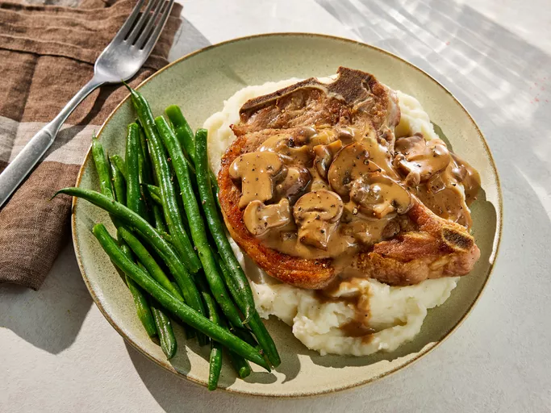

Home
Mushroom Pork Chops

Image courtesy of
Dotdash
Meredith Food Studios
.
Description
Classic pork chops topped with a savoury sauce of cream of mushroom soup, onions
and fresh mushrooms that can be served with any side of your choosing, be it
rice, brown rice, veggies or potatoes, etc.
Ingredients
Ingredients and Steps courtesy of
Allrecipes.
- 4 pork chops
- salt and ground black pepper to taste
- 1 pinch garlic salt, or to taste
- 1/2 pound fresh mushrooms, sliced
- 1 onion, chopped
- 1 (10.5 Oz/300g) can condensed cream of mushroom soup
Steps
- Gather all ingredients.
- Season pork chops with salt, pepper, and garlic salt.
-
Brown chops on both sides over medium-high heat in a large nonstick skillet;
transfer browned chops to a plate.
- Add mushrooms and onion to the same skillet and sauté for one minute.
-
Arrange browned chops on top of mushroom mixture. Pour soup over chops. Cover,
reduce the heat to medium-low, and simmer until chops are cooked through and
no longer pink in the center, 20 to 30 minutes. An instant-read thermometer
inserted into the center should read 145 degrees F (63 degrees C).
- Serve and enjoy!